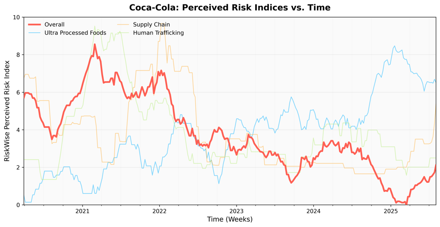
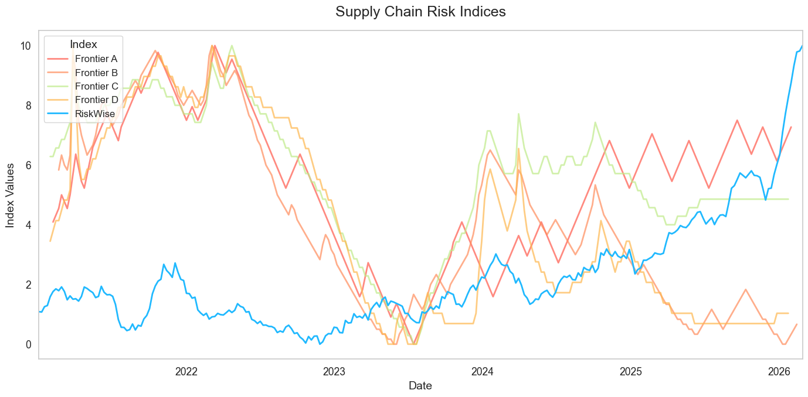
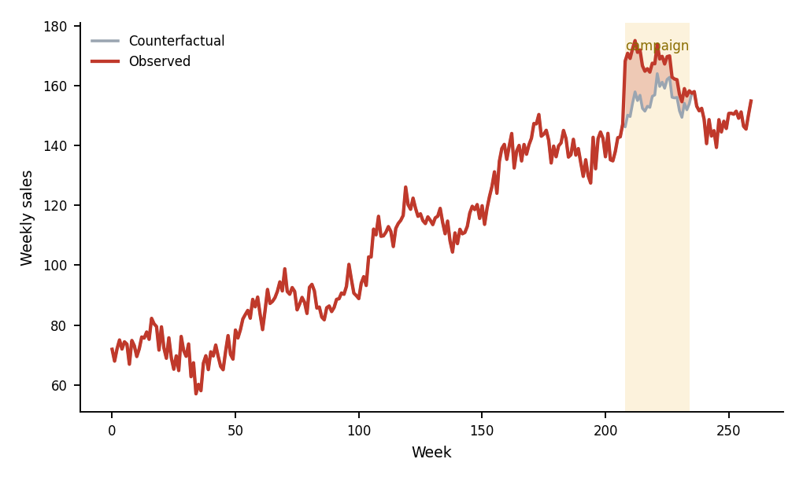
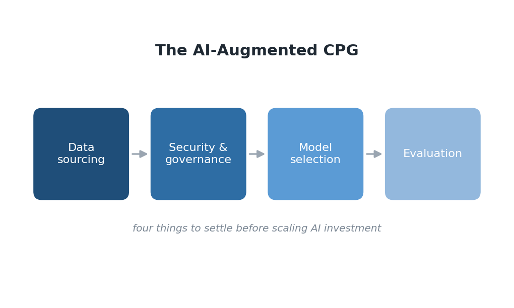

Writing
Technical essays on agent infrastructure, evaluation of frontier models in vertical domains, retrieval-augmented generation, forecasting, and causal inference. Most were written for the Tickr engineering blog; where I could confirm the published URL, each post links back to the original.

The Agent Risk Harness
An agent is only as useful as the context it can assemble, the tools it can invoke, and the constraints that govern how it acts. What it takes to turn a model into a system.

Improving Forecasting Models with Large Language Models
Augur, our LLM-guided covariate search. 15.6% average MAPE reduction, 13× faster, with logical validation of predictors.

Seeing Risk Clearly: Moving Past Emotion to Measure Risk Exposure
Why sentiment is a poor proxy for exposure, and what an event-linked risk index looks like instead.

Whispers of Latent Reasoning
A 4B thinking-tuned model beats GPT-5.2 on entity-level risk attribution, and keeps the gains even with chain-of-thought suppressed.

RiskWise and Frontier AI: Rethinking How Emerging Risk Is Measured
Frontier models generate risk indices quickly, but reliable measurement needs transparent, event-linked signals. A head-to-head.

Surpassing Frontier AI for CPG & Retail
Dynamic hierarchical product categorization: a domain-tuned system beating OpenAI and Anthropic, at 100–1,000× human speed.

Cold Start & Tuning for Retrieval Augmented Generation
How to tune a RAG system when you have no labelled data yet: chunking, retrieval parameters, and the MMR diversity trade-off.

Predicting the Impact of Marketing Campaigns with AI
Year-over-year comparison is the wrong tool when the data-generating process isn't constant. Building a counterfactual instead. (Basis for a US patent application.)

The AI-Augmented CPG, Part 1: What to Think About When Adopting AI
Four things to settle before expanding investment in generative AI: data sourcing, security, model selection, and evaluation.